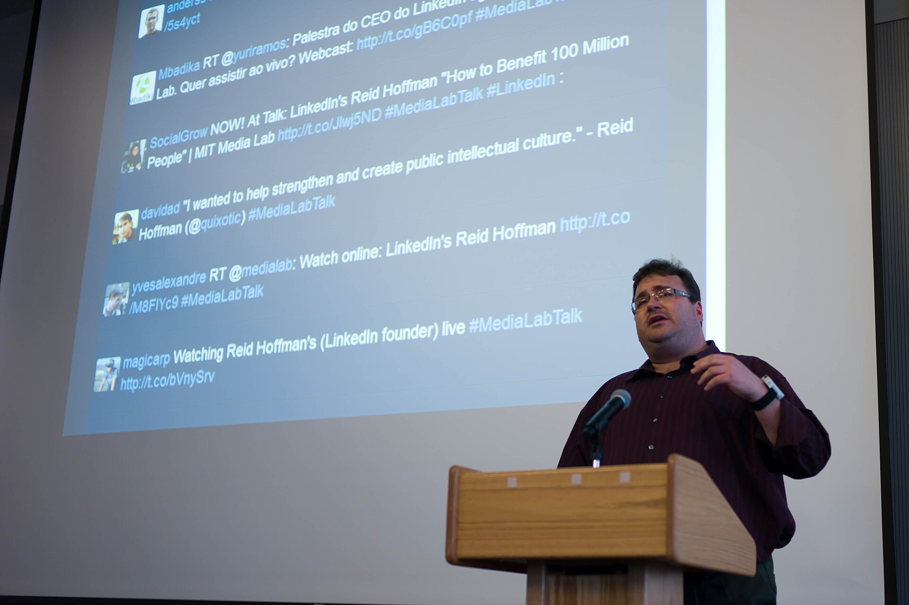

Hoffman Sent $16 Million to Pro-Talarico Super PAC After Admitting More Epstein Meetings
James Talarico won Texas on Nov. 3. Federal filings show the main super PAC behind him took 38% of its money from Reid Hoffman, $16 million of it after Hoffman admitted more meetings with Jeffrey Epstein than he had disclosed.

Democrat James Talarico won Texas’ U.S. Senate seat on Nov. 3, the first Democratic Senate win in the state since 1988. The largest donor to the main super PAC working to elect him was Reid Hoffman, the LinkedIn co-founder and Democratic megadonor, who gave Lone Star Rising PAC $16.5 million this year, Federal Election Commission filings show. Of that, $16 million arrived after Feb. 3, 2026, when Hoffman publicly acknowledged that he had met Jeffrey Epstein more often than he had told reporters in 2019. The last check, for $5 million, is dated Oct. 9, 25 days before the election. The money went to an outside group that was barred from coordinating with Talarico, not to his campaign.
The New York Post compressed the story into one line on Oct. 8: “Billionaire Jeffrey Epstein associate Reid Hoffman bankrolling James Talarico’s Texas Senate run,” its post on X read. That sentence joins two separate federal records. The money is documented in FEC filings. The Epstein contacts are documented in files the Justice Department released earlier this year. Nothing in the PAC’s filings mentions Epstein, and none of the Epstein documents naming Hoffman reviewed by Unleashed.news mentions Talarico.
Start with the money. Lone Star Rising registered on Sept. 2, 2025, as an independent-expenditure-only committee, a super PAC that may raise unlimited sums but may not coordinate with a candidate, FEC records show. Hoffman’s first check, for $500,000, is dated Jan. 27, 2026, and lists his employer as Greylock Partners, the venture firm where he is a partner, according to the PAC’s pre-primary report. A $1 million check followed on Feb. 23, the April quarterly report shows, and $10 million on June 30, the July quarterly report shows. The fourth, $5 million on Oct. 9, appears in the PAC’s pre-general report, filed Oct. 22 and amended the next day, and brought his total to $16.5 million.
That makes Hoffman the group’s dominant donor. The PAC reported $31,272,075 in receipts through Sept. 30 and $11,745,505 more from Oct. 1 to 14, about $43 million in all; his money is about 38% of it. The next-largest gift in the pre-general report was $2.5 million from Michael Bloomberg, on Oct. 13. Hoffman’s June check alone was nearly 80% of the roughly $13 million the PAC raised from April through June, The Texas Tribune reported, and Bloomberg News called it the largest gift to a pro-Talarico super PAC that quarter.
None of it went to Talarico himself. The FEC’s itemized records for Talarico for Texas, the candidate’s own committee, list no contribution from Reid Hoffman. The campaign had raised more than $70 million by July, the Tribune reported, so Hoffman’s outside money, though large, did not pay for Talarico’s own operation.
The PAC spent it aggressively. Before the March 3 primary, it spent nearly $4.5 million opposing Rep. Jasmine Crockett and about $4 million supporting Talarico, its itemized filings show; from the primary through Sept. 30, it spent about $12.7 million against the Republican nominee, Texas Attorney General Ken Paxton. Talarico’s campaign said it had no hand in any of it. The campaign “has no control over contributions to any super PAC,” spokesman JT Ennis told the Tribune; federal law bars coordination between the two.
Then came a quiet quarter that turned out to be a pause, not a stop. The PAC raised $9,578,650 from July 1 to Sept. 30 and nothing from Hoffman, its October quarterly report shows. In those weeks his money went elsewhere: $5 million on Sept. 10 and $3.5 million on Sept. 22 to HMP, the Democratic super PAC formally known as House Majority PAC, and $5 million on Sept. 25 to SMP, its Senate counterpart, FEC records show. On Oct. 9 he returned to Lone Star Rising with $5 million, 43% of all the PAC raised from Oct. 1 to 14, the pre-general report shows. The same report lists $1 million from SMP itself on Oct. 2. The filings do not show whose money that was.
Twenty-five days after Hoffman’s last check, Talarico won. With about 5,200 of 5,300 polling places reporting, he held about 55% of the vote in the Texas secretary of state’s unofficial count, Houston Public Media reported, and the Associated Press called the race shortly after 10 p.m. Central time, the Tribune reported. How much of that result the PAC’s spending bought cannot be measured from the filings. Its post-general report, covering Oct. 15 through Nov. 23, is due Dec. 3 and will show whether Hoffman gave again in the race’s final weeks.
The Epstein record is a separate trail. On Jan. 30, 2026, the Justice Department released “more than 3 million pages of documents,” Al Jazeera reported, under the Epstein Files Transparency Act. Earlier records had already placed Hoffman in contact with Epstein after Epstein’s 2008 guilty plea in Florida: calendars obtained by ABC News show Skype calls in 2013 and 2014 and a November 2014 entry for a flight to “LSJ,” an apparent reference to Epstein’s private island. Hoffman has said he visited the island once, on an MIT fundraising trip, ABC reported.
The new files fill in the years that followed. On Aug. 4, 2015, Epstein emailed Hoffman a numbered list of advice on buying a private jet: “I will hold your hand all along the way,” the email reads. On April 6, 2016, after Hoffman’s assistant asked for Epstein’s cellphone number, Epstein’s assistant confirmed “Dinner booked for you and Reid” in a private room at a Palo Alto sushi restaurant two days later, an email shows. Calendar alerts then record an April 29 appointment with Hoffman “at the Media Lab,” a June 20 Skype call and a June 25 “Phone Date.” On July 24, Epstein’s schedule lists a “Meeting w/Reid Hoffman, Joi Ito and Martin Nowak at Martin’s office,” the calendar shows. On March 24, 2018, an alert reads: “remind JE of Skype call with Reid Hoffman at 10am PT,” according to the files.
Hoffman has put his own account on the record at least three times. In September 2019, he apologized for his part in Epstein-linked fundraising for the MIT Media Lab: “By agreeing to participate in any fundraising activity where Epstein was present, I helped to repair his reputation and perpetuate injustice,” he said. In November 2025, after President Donald Trump said Hoffman “should be under investigation,” Hoffman wrote that he “was never a client of Epstein’s and never had any engagement with him other than fundraising for MIT,” ABC News reported.
On Feb. 3, 2026, he went further. “I only knew Jeffrey Epstein because of a fundraising relationship with MIT, which I very much regret,” he wrote on X. “In 2019 I told Axios the last meeting I had with him was in 2015 but I was mistaken.” He listed six meetings and calls from April 2016 to March 24, 2018, said they were “all coordinated by Joi Ito, then director of the MIT Media Lab,” and promised to share any others he found. Each of the six matches an entry in the Justice Department’s files.
The files also hold two contacts his list does not. On Sept. 30, 2017, weeks after hurricanes battered the U.S. Virgin Islands, Hoffman emailed Epstein: “Fun. You good?” Epstein replied that it had been “a very messy divorce with mother nature,” the exchange shows. It was an email, not a meeting, and Hoffman’s list covered meetings. On March 16, 2019, less than four months before Epstein’s arrest on federal sex-trafficking charges, an automated alert in his email reads “Alert - reid hoffman” for 9 a.m. that day, the document shows. It does not say what the alert concerned or whether the two men spoke. The Washington Free Beacon reported both documents on Feb. 2, the day before Hoffman’s post. And while Hoffman described every listed meeting as coordinated by Ito, the April 2016 dinner booking names only “you and Reid.”
None of these documents describes a crime. No Epstein victim has publicly accused Hoffman of wrongdoing, ABC News reported, and Ghislaine Maxwell, asked by Deputy Attorney General Todd Blanche whether she had seen Hoffman flying with Epstein or “getting massages,” answered, “No. No.”
Epstein’s name also ran through the campaign itself. Talarico attacked Paxton’s office over a plea deal in a Waco sexual-abuse case, calling it an “Epstein-style sweetheart deal,” the Post reported; Lone Star Rising did not respond to the Post’s request for comment. The records prove the money, and they prove the contacts. Nothing in them connects one to the other. Whether “Epstein associate” is the right label for a donor whose documented meetings with Epstein he attributes to MIT fundraising is a judgment the record leaves to the reader.
The point
What we found: both halves of the Post’s line are documented, and neither proves the other. Hoffman gave $16.5 million to Lone Star Rising in four checks, about 38% of all it raised through Oct. 14, and none to Talarico’s campaign. The Justice Department’s files record his meetings and calls with Epstein from 2015 to 2018, nearly all of which Hoffman has now confirmed himself. The eureka is in the dates: $16 million of the money reached the PAC after Feb. 3, 2026, the day Hoffman admitted more Epstein meetings than he had disclosed. The empty third quarter, when $13.5 million of his money went to HMP and SMP instead, was a pause, not a stop: his final $5 million landed on Oct. 9, in the last filing voters could see before they chose Talarico.
Why it matters
Texas has elected a Democrat to the U.S. Senate for the first time since 1988, and the largest donor to the main super PAC behind him is a man whose account of his Epstein contacts changed this year. A single donor supplying more than a third of a super PAC’s money can shape a Senate race without ever writing a check to the candidate, and voters see it only in filings that arrive weeks later: the last report before the vote was filed Oct. 22, 12 days before it. Texans deserve the exact amounts and dates, the line between a super PAC and a campaign, and the difference between documented contacts with Epstein and evidence of wrongdoing. All of it is in the public record.
The questions
- What will Lone Star Rising’s post-general report, due Dec. 3, show about Hoffman’s giving in the race’s final weeks?
- Did Lone Star Rising weigh Hoffman’s Feb. 3 correction before it accepted $15 million more from him?
- Was any of SMP’s $1 million to Lone Star Rising on Oct. 2 money Hoffman had given SMP a week earlier?
- What did the March 16, 2019, alert bearing Hoffman’s name in Epstein’s email concern, and did the two men speak that day?
- Will Hoffman add the Sept. 30, 2017, email exchange, and any other contacts, to the list he promised to update?
Sources
- Lone Star Rising PAC, FEC Form 3X, July Quarterly Report (April 1 to June 30, 2026), Schedule A Federal Election Commission
- Lone Star Rising PAC, FEC Form 3X, Pre-Primary Report (Jan. 1 to Feb. 11, 2026), Schedule A Federal Election Commission
- Lone Star Rising PAC, FEC Form 3X, April Quarterly Report (Feb. 12 to March 31, 2026), Schedule A Federal Election Commission
- Lone Star Rising PAC committee profile and financial summary Federal Election Commission
- Receipts search: Talarico for Texas, contributor “Hoffman, Reid” (no itemized contribution listed) Federal Election Commission
- Reid Hoffman’s statement on X about his meetings with Epstein Reid Hoffman (@reidhoffman)
- EFTA00648098: email confirming a dinner with Reid Hoffman in Palo Alto on April 8, 2016 U.S. Department of Justice, Epstein Library (Data Set 9)
- EFTA02052482: calendar alert for April 29, 2016 U.S. Department of Justice, Epstein Library (Data Set 10)
- EFTA02050217: calendar alert for June 20, 2016 U.S. Department of Justice, Epstein Library (Data Set 10)
- EFTA02047891: calendar alert for June 25, 2016 U.S. Department of Justice, Epstein Library (Data Set 10)
- EFTA00285251: Epstein’s schedule for July 2016 U.S. Department of Justice, Epstein Library (Data Set 9)
- EFTA02240368: calendar alert for March 24, 2018 U.S. Department of Justice, Epstein Library (Data Set 11)
- EFTA00849488: Epstein email to Reid Hoffman of Aug. 4, 2015, on buying a private plane U.S. Department of Justice, Epstein Library (Data Set 9)
- Lone Star Rising PAC, FEC Form 3X, October Quarterly Report (July 1 to Sept. 30, 2026) Federal Election Commission
- Contributions from Reid Hoffman to HMP, 2025–2026 Federal Election Commission
- New York Post post on X, Oct. 8, 2026 New York Post (@nypost)
- EFTA02590898: email exchange between Reid Hoffman and Epstein, Sept. 30, 2017 U.S. Department of Justice, Epstein Library (Data Set 11)
- EFTA02637326: automated alert in Epstein’s email, March 16, 2019 U.S. Department of Justice, Epstein Library (Data Set 11)
- Lone Star Rising PAC, FEC Form 3X, Pre-General Report (Oct. 1 to 14, 2026), amended, Schedule A Federal Election Commission
- Contributions from Reid Hoffman to SMP, 2025–2026 Federal Election Commission
- Billionaire Reid Hoffman gives $10 million to super PAC backing Talarico’s Senate bid in Texas The Texas Tribune (Samanta Habashy)
- Reid Hoffman Pumps $10 Million Into Talarico’s Senate Bid Bloomberg News (Bill Allison)
- LinkedIn co-founder Reid Hoffman’s ties to Jeffrey Epstein face Trump-ordered investigation ABC News (Olivia Rubin and James Hill)
- Skype, Sushi, and a ‘Phone Date’: Democratic Megadonor Reid Hoffman Maintained Jeffrey Epstein Relationship Years After He Said It Ended The Washington Free Beacon (Chuck Ross)
- US Department of Justice releases 3 million new Epstein files Al Jazeera
- House Majority PAC FactCheck.org
- Billionaire Jeffrey Epstein associate Reid Hoffman bankrolling James Talarico’s Texas Senate run New York Post (Josh Christenson), republished by AOL
- James Talarico defeats Ken Paxton, giving Democrats their first U.S. Senate win in Texas since 1988 The Texas Tribune
- Democrat James Talarico wins U.S. Senate seat, ending GOP’s 32-year Texas statewide winning streak Houston Public Media